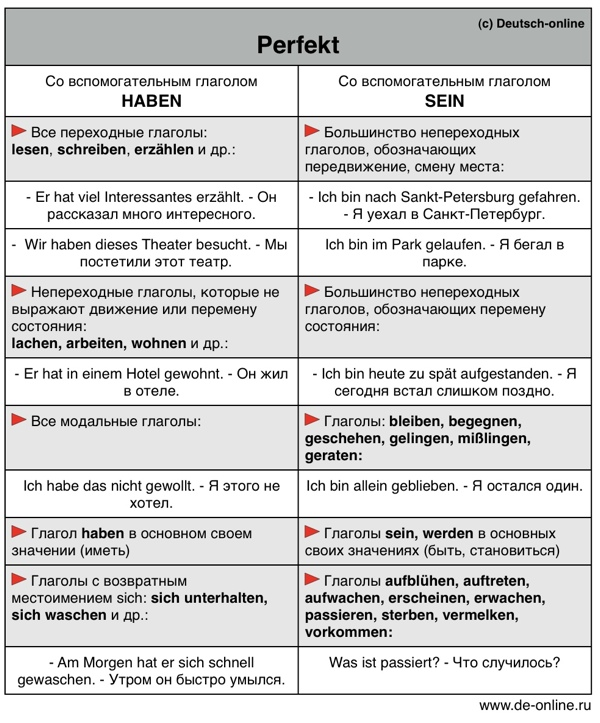
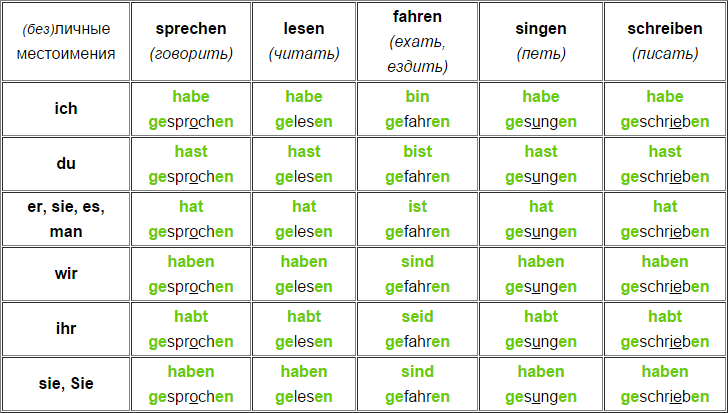
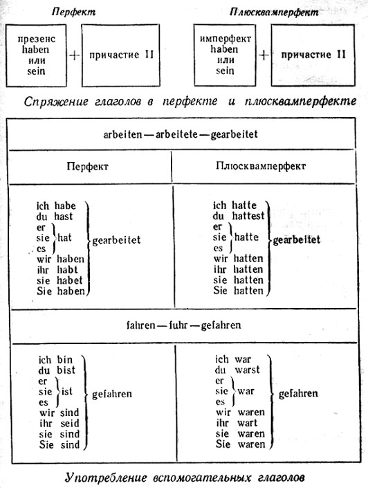
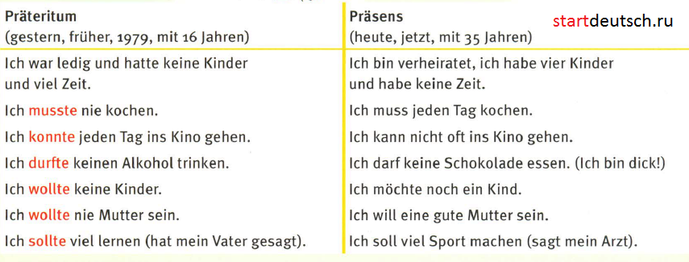

Perfekt — РАЗГОВОРНАЯ ФОРМА ПРОШЕДШЕГО ВРЕМЕНИ(законченое) в немецком языке
- Perfekt от любого (сильного или слабого) глагола образуется при помощи вспомогательного глагола haben или sein и причастия II ( haben/sein + Partizip II). При спряжении изменяется только вспомогательный глагол, а причастие II остается неизменным.
laufen(бежать) — lief — ist gelaufen; lachen(смеяться) — lachten — hat gelacht



При образовании Perfekt основная трудность заключается в выборе вспомогательного глагола. При этом надо руководствоваться следующими правилами
- все непереходные глаголы, обозначающие передвижение в пространстве или изменение состояния, переход в новую фазу процесса образуют Perfekt с помощью глагола sein
Например:
- движение:
- fahren (ехать) — ist gefahren
gehen (идти) — ist gegangen
aufstehen (вставать) — ist aufgestanden
- изменение состояния:
- aufblühen (расцветать) — ist aufgeblüht
einschlafen (засыпать) — ist eingeschlafen
sterben (умирать) — ist gestorben
werden (становиться) — ist geworden
- Глаголы sein и bleiben также образуют Perfekt с помощью глагола sein:
- sein — ist gewesen
bleiben — ist geblieben
- К глаголам, образующим Perfekt с помощью глагола haben, относятся все глаголы, управляющие винительным падежом (переходные глаголы):
- bauen (строить) — hat gebaut
essen (есть) — hat gegessen
lieben (любить) — hat geliebt
- все возвратные глаголы:
- Ich kann es nicht machen — Я не могу это сделать
Ich habe es nicht machen können — Я не смог это сделать
- непереходные глаголы, обозначающие продолжительное действие или состояние:
- liegen (лежать) — hat gelegen
stehen (стоять) — hat gestanden
- глаголы, управляющие дательным падежом, не обозначающие движения:
- glauben (верить кому-либо) — hat geglaubt
gefallen (нравиться кому-либо) — hat gefallen
- глаголы, обозначающие начало и конец действия:
- anfangen (начинать) — hat angefangen
aufhören (прекращать) — hat aufgehört
- Некоторые глаголы в зависимости от своего значения в контексте могут образовывать Perfekt как с haben так и с sein.
- Например:
- Sie ist mit dem Auto gefahren
перемещение в пространстве, здесь fahren глагол непереходный
Ich habe das Auto in die Garage gefahren
здесь fahren глагол переходный: имеет дополнение в винительном падеже das Auto
- Ich bin nach New York geflogen
перемещение в пространстве, здесь fliegen глагол непереходный
Der Pilot hat das Flugzeug zum ersten Mal geflogen
здесь fliegen глагол переходный: имеет дополнение в винительном падеже das Flugzeug
- В спорных случаях следует обращаться к словарю, где для каждого значения глагола приводится правило образования Perfekt
Прошедшее время (Präteritum)
- Кроме Perfekt (совершенное время) есть в немецком языке и просто прошедшее время – Präteritum (что по-латыни означает прошлое, прошедшее мимо). Оно образуется при помощи суффикса -t-.

Особенностью Präteritum является то, что в форме он (она, оно) не прибавляется личное окончание -t, то есть: формы я и он совпадают. (Как вы помните, то же происходит и с модальными глаголами.)
- Как мы уже говорили, в немецком языке есть сильные (нерегулярные, не подчиняющиеся правилу) глаголы. Sagen – слабый, регулярный глагол. А вот fallen – сильный:
ich, er fiel (я, он упал), wir, sie, Sie fielen,
du fielst,
ihr fielt.
- Здесь уже не нужен суффикс прошедшего времени -t-, так как на прошедшее время указывает само изменившееся слово (сравните с английским: I see – я вижу, I saw – я видел). Формы я и он одинаковы, личные окончания в этих формах отсутствуют (всё так же, как и у модальных глаголов в настоящем времени).
- Perfekt употребляется тогда, когда действие, совершенное в прошлом, связано с настоящим моментом, когда оно актуально. Например, вы приходите домой и жена спрашивает вас (как говорится, мечтать не вредно):
- Hast du Bier gekauft? – Ты купил пиво?
- Ja, ich habe Bier gekauft. (Отвечаете вы с сознанием выполненного долга).
PLUSQUAMPERFEKT
- Plusquamperfekt используется в том случае, когда надо показать (подчеркнуть), что какое-то событие произошло раньше события, о котором сейчас идет речь. Plusquamperfekt образуется по тем же правилам, что и Perfekt, но в качестве вспомогательных глаголов используются Präteritum от глаголов sein/haben- waren/hatten. Все остальные правила, касающиеся выбора вспомогательного глагола, спряжения, места в предложении полностью совпадают с соответствующими правилами для Perfekt.
Plusquamperfekt употребляется достаточно редко, в тех случаях, когда предшествование действия следует отметить особо.
- Например:
Als er ankam, hatten sie die Arbeit schon beendet -
(к тому моменту) Когда он пришел, работа была уже закончена
Gestern hatte er schon seit zwei Tagen nichts gegessen
-Ко вчерашнему дню он ничего не ел уже два дня
- При этом возможна ситуация, когда момент, которому предшествует событие, формально находится в настоящем времени (совпадает со временем сообщения).
- Im letzten Jahr war er ins Ausland abgereist - В прошлом году он уехал за границу
Im vorigen Semester hatte er alle Prüfungen abgelegt - В прошлом семестре он сдал все экзамены.